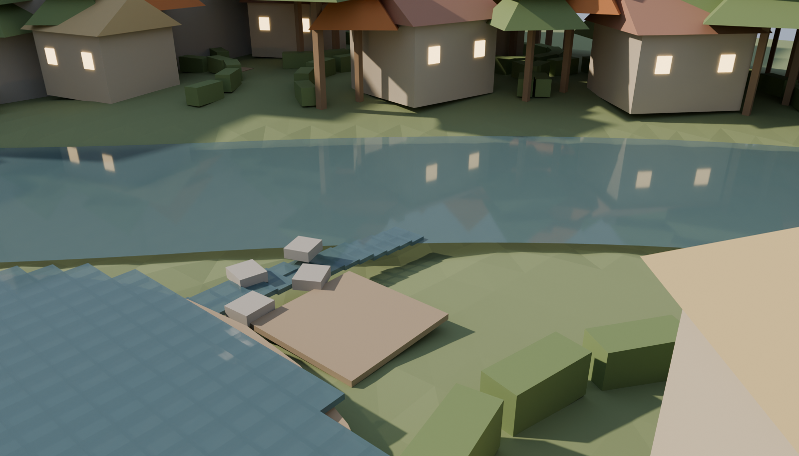
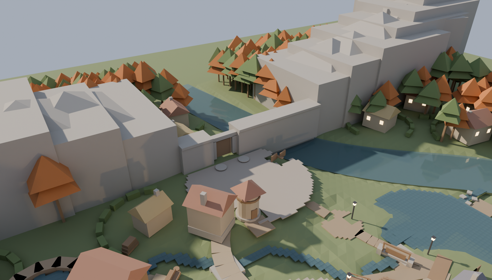
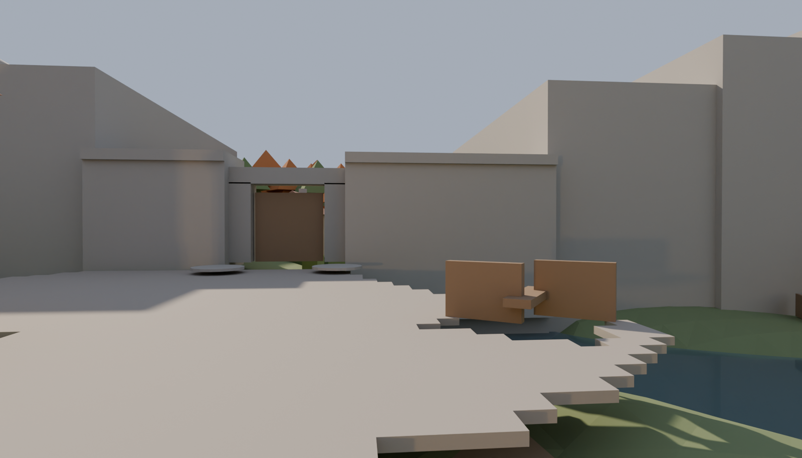
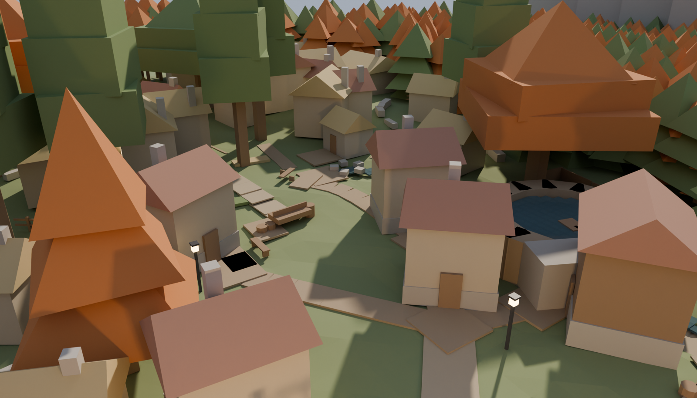
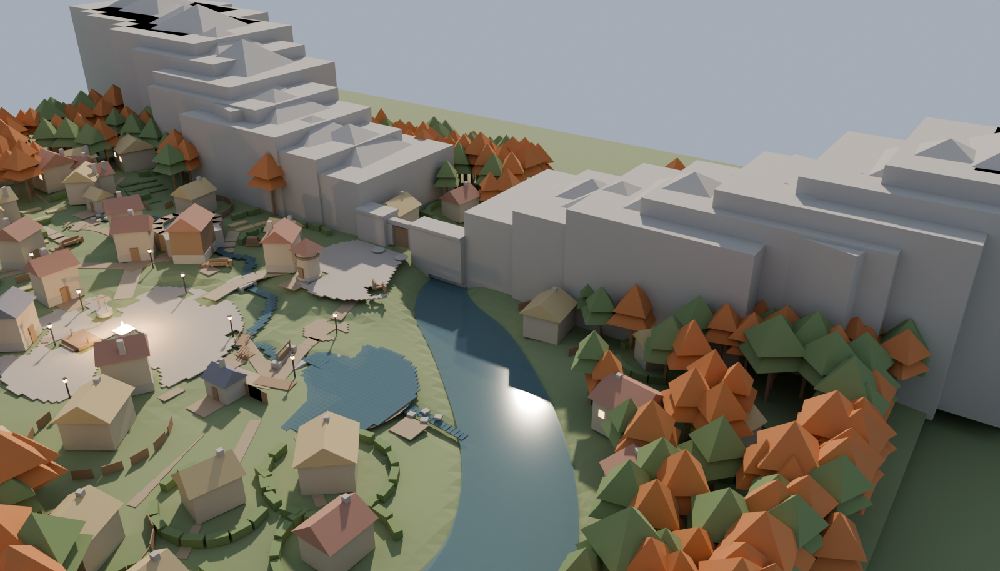
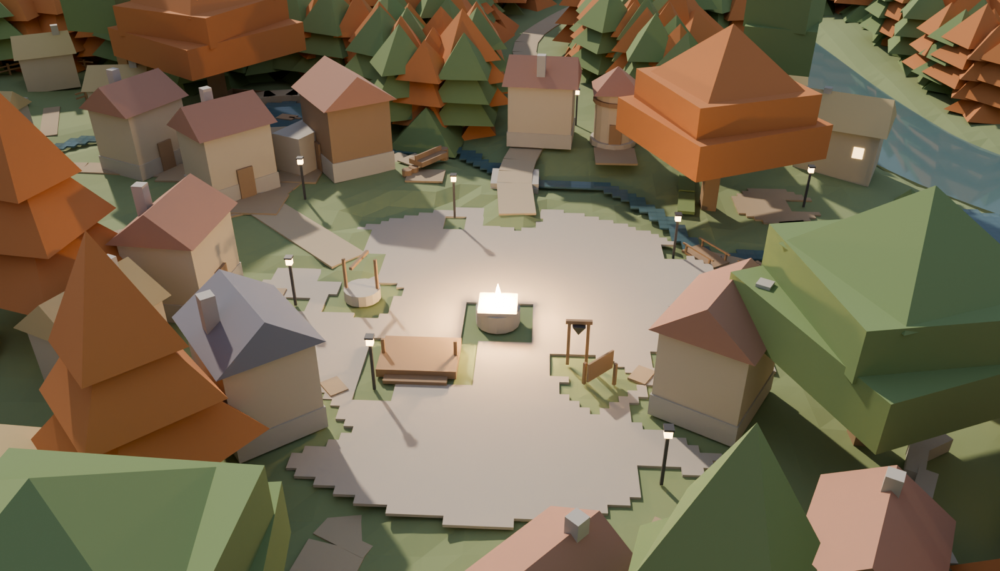
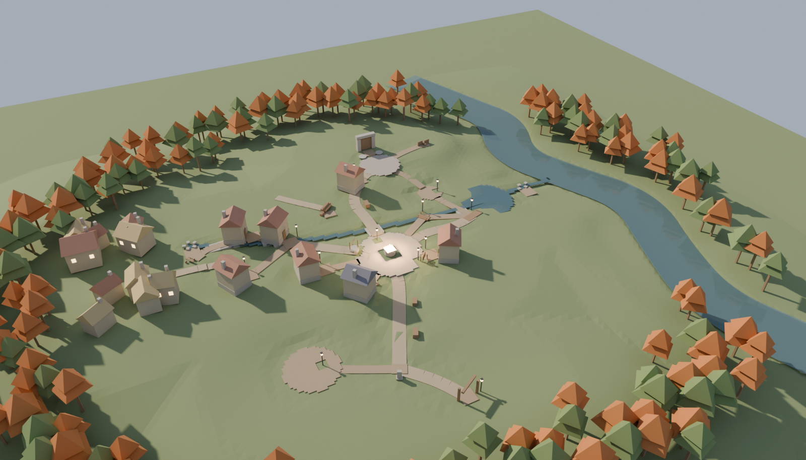
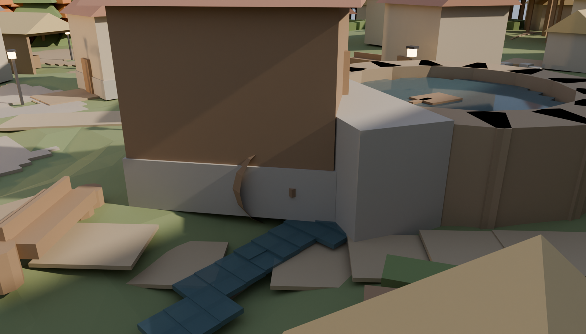
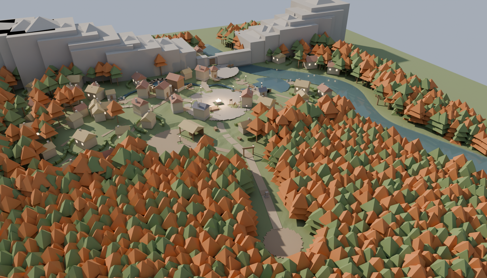

Emberbrook — rescale review board (blockout massing; style is a later pass)
Rounds 2 + 2b. Tree/cliff QUALITY is a dressing-stage bar — judge layout, scale, and rhythm here, not materials.arrival-clearing — THE GAME'S FIRST FRAME — the wood road looking north

confluence — brook mouth into the river

gatefield-seal-aerial — the seal from above — flood-fill reaches 0 m² beyond the gate

gatefield-seal — the sealed notch — gate + water fill the pinch, 0.00 m walkable strip

home-lane — Home Roworchard-approach — the orchard approach at eye level

river-meanders — the river course

square — Festival Square at r14

town-aerial — the town: households, brook, forest as container

watermill — TASTE ITEM: the pound stands ~1.9 m proud — judge the embankmentwaystone-road — the Waystone on the climb, arch and first lamp ahead

wood-aerial — the arrival corridor cut through the Whisperwood